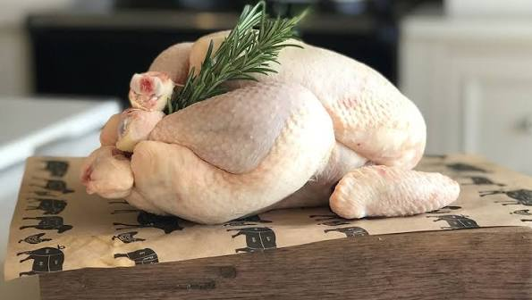
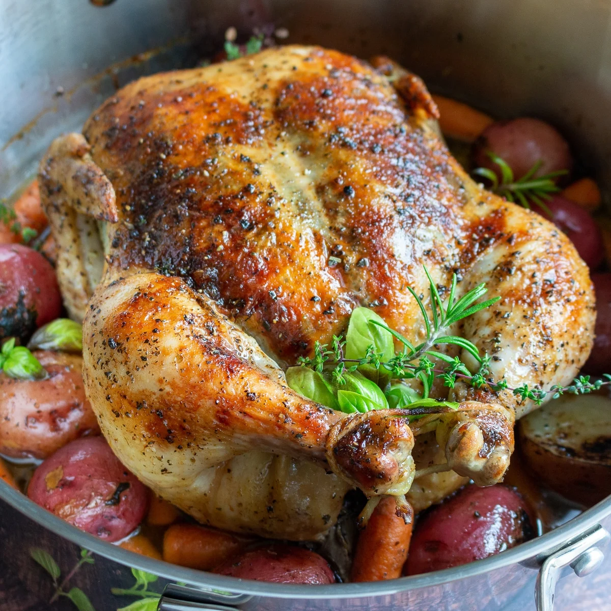

RECIPE
Savory Herb-Infused Chicken
Welcome to Cooks Delight, where culinary dreams come alive!
Discover the rich flavors of tender chicken infused with
aromatic herbs, creating a delicious dish full of warmth and flavor.

40 MINS

EASY PREP

3 SERVES

Picture tender chicken infused with a fragrant blend of fresh herbs and savory seasonings. Every bite brings together the rich, aromatic flavors of rosemary, thyme, garlic, and perfectly roasted chicken. Join us as we explore the art of creating this comforting dish, where simple ingredients transform into a flavorful masterpiece.
As you prepare your own, envision the kitchen filling with the warm aroma of fresh herbs and golden-roasted chicken, setting the stage for a delightful meal. The anticipation builds as the chicken cooks to juicy perfection, promising a dining experience that feels both comforting and elegant. Whether you're a seasoned chef or a kitchen novice, this recipe invites you to create a delicious centerpiece that will leave a lasting impression on your guests and loved ones.
Let’s go over the basics – the do’s, and the don’ts – for making Savory Herb-Infused Chicken
DO'S:
Use Fresh Herbs:
Choose fresh rosemary, thyme, parsley, or other aromatic herbs to bring out the natural flavor of the chicken.
Season the Chicken Well:
Coat the chicken evenly with herbs, garlic, salt, pepper, and your favorite seasonings for a rich and savory taste.
Check Internal Temperature:
Use a reliable meat thermometer to ensure the chicken reaches a safe internal temperature of 165°F (74°C).
DON'TS:
Skip the Marinating:
Allow the chicken to rest with the herbs and seasonings so the flavors can fully absorb into the meat.
Overcrowd the Pan:
When roasting, make sure the chicken pieces have enough space between them for even cooking and proper browning.
Overcook the Chicken:
Avoid cooking the chicken for too long, as this can make the meat dry and less tender.
INSTRUCTIONS
This recipe goes beyond the basics, inviting you to savor the rich and aromatic flavors of tender chicken infused with fresh herbs and savory seasonings. It's a celebration of simple ingredients, where every herb and spice plays an important role in creating a dish that is both comforting and delicious.
Allow the chicken to rest for 10 minutes before serving. This brief resting period is essential; it allows the juices to redistribute, ensuring each slice remains tender and flavorful. As you carve into the golden exterior, be prepared for the enticing aroma of fresh herbs and roasted garlic that fills the air, signaling that your Savory Herb-Infused Chicken is ready to be served.
- Preheat your oven to 375°F (190°C).
- Rinse the chicken inside and out, then pat it dry with paper towels.
- Carefully loosen the skin of the chicken and rub minced garlic and fresh herbs directly onto the meat.
- Season the chicken with rosemary, thyme, salt, and pepper, ensuring the flavors are evenly distributed.

- In a small bowl, mix olive oil, fresh thyme, fresh rosemary, minced garlic, salt, and black pepper to create a flavorful herb-infused mixture.
- Brush the entire chicken with the herb mixture, making sure it is evenly coated.
- Season the exterior with additional salt and black pepper to taste.

- Place the chicken in a roasting pan, breast side up.
- Roast in the preheated oven for approximately 1 hour, or until the internal temperature reaches 165°F (74°C).
- Allow the chicken to rest for 10 minutes before carving.
- Serve with the pan juices and fresh herbs for an extra burst of savory flavor.
- Side Dish: Serve alongside roasted vegetables, mashed potatoes, or a simple green salad.
- Wine: Pair with a crisp white wine or a light rosé for a well-balanced meal.
Roasted Vegetables: The savory flavors of the herb-infused chicken complement beautifully with seasonal roasted vegetables.
Herb-infused Quinoa: Create a wholesome meal by serving it alongside a bed of herb-infused quinoa.
The combination of fresh herbs, garlic, and tender roasted chicken creates a savory masterpiece that takes the classic roast chicken to a whole new level. The aromatic herbs not only add depth and fragrance but also enhance the natural flavors of the chicken, resulting in a juicy and flavorful dish. Whether you're hosting a family dinner or looking for a show-stopping centerpiece for a special celebration, this Savory Herb-Infused Chicken is the perfect choice. The simplicity of the ingredients allows the natural flavors to shine, making it a versatile and impressive meal.


Isabella Russo
In the world of pots and pans, I'm on a mission to turn every meal into a masterpiece. Cooks Delight is not just a blog; it's a shared space where the love for food transcends boundaries. Here, we celebrate the art of crafting meals that not only nourish the body but also feed the soul.
- 1 whole chicken (about 4-5 pounds)
- 2 tablespoons butter
- Fresh herbs (rosemary, thyme, sage), finely chopped
- Salt and freshly ground black pepper
- Optional: root vegetables (carrots, potatoes, onions) for roasting
PREPARATION
- Roasting pan
- Meat thermometer
- Cutting board
- Kitchen twine
Per serving (based on a 4-pound chicken):
- Calories: ~140
- Protein: ~18g
- Total Fat: ~6g
- Carbohydrates: ~3g